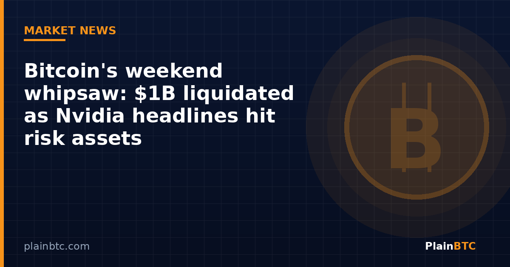

Bitcoin’s weekend whipsaw: $1B liquidated as Nvidia headlines hit risk assets

Crypto spent the weekend doing what it often does when traditional markets are closed: absorbing every headline and punishing traders who lean too hard on leverage. Bitcoin fell to about $73,761 late Sunday—its lowest level since August— before recovering to trade above $75,000, according to CoinDesk. Ether slid below $2,100 and later bounced back near $2,144.
The price swings were not just cosmetic. CoinGlass data cited by CoinDesk showed more than $1 billion in leveraged cryptocurrency positions liquidated within 24 hours. Roughly $913 million of that total came from longs— traders betting prices would rise. Ether absorbed the heavier share of forced selling relative to bitcoin, with about $448 million in liquidations versus roughly $272 million for bitcoin. The single largest liquidation order was an ethereum position worth about $48 million.

Why the market moved
Two weekend stories stood out. First, reports that Nvidia CEO Jensen Huang admitted to an affair with a woman U.S. officials believe may have been collecting information for Beijing. Nvidia’s board said it opened an independent investigation and stated it had no reason to believe national security or company secrets had been compromised. Still, the news landed on a market already uneasy about the durability of the AI trade: the Nasdaq had fallen nearly 5% the prior week and was on a multi-week losing streak.
Crypto-native proxies reacted before Wall Street reopened. CoinDesk reported that NVDAX, a tokenized Nvidia share product, dropped about 3.55% to $180.42 over 24 hours, while the underlying Nvidia equity had closed Friday at $186.64—a discount that suggested crypto traders were pricing a weaker open for Monday.
Second, U.S. Secretary of State Marco Rubio said negotiations with Iran had stalled and called Iranian demands “outrageous,” keeping Middle East geopolitical risk in focus. CoinDesk noted that bitcoin has frequently declined during oil-related risk-off moves since conflict intensified earlier in 2026, despite the long-running “digital gold” narrative.

Derivatives painted a risk-off picture
A separate CoinDesk markets wrap on Nov. 9 added more texture. Futures trading volume jumped more than 200% to about $180 billion as the weekend lull ended, while open interest fell about 3% to roughly $127 billion—a combination consistent with traders closing positions rather than adding fresh leverage. Liquidations in that broader snapshot reached about $1.1 billion. Options markets also showed rising demand for downside protection: bitcoin one-week implied volatility climbed to about 43% from around 33% on Thursday, while ether’s rose to about 60% from around 46%.
Only five of the top 100 cryptocurrencies by market value were up 1% or more over 24 hours in that wrap—underscoring how broad the risk-off tone was across majors including bitcoin, ether, XRP, and solana.
What U.S. readers should watch next
The rebound above $75,000 was welcome for holders, but CoinDesk cautioned that the bounce had already stalled at the time of writing. Near-term technical levels it flagged included the 200-day average near $73,150 as support and the 100-day average near $77,430 as resistance.
Practically, Monday’s traditional-market open matters because weekend crypto moves often get confirmed—or reversed—once Nasdaq futures and cash equities price the Nvidia news. Separately, CoinDesk’s Crypto Daily noted that traders are watching Tuesday’s U.S. consumer price index: a softer print could ease bond yields and help risk assets, but sustained upside may still be hard without stronger demand from spot bitcoin ETFs.
If you are a long-term holder rather than a leveraged trader, the weekend was a reminder of a simple rule: volatility is normal, and forced liquidations mostly hit people who borrowed to amplify a directional bet. Spot ownership on a regulated U.S. exchange is a different risk profile from perpetual futures. If you are just starting, opening a Coinbase account is one regulated U.S. option for buying bitcoin without futures leverage.
New to crypto? Our beginner guide to buying bitcoin on Coinbase.
If you buy bitcoin through River
River is a U.S. bitcoin service. If it is available where you live and you decide to open an account, you can use our referral link. Check River’s current terms on their site. This is not investment advice.
River signup page (referral link)Not financial advice. This article is for informational and educational purposes only. It is not investment, trading, legal, or tax advice. Cryptocurrency is volatile and you can lose money. Do your own research and consider speaking with a qualified professional before making financial decisions.